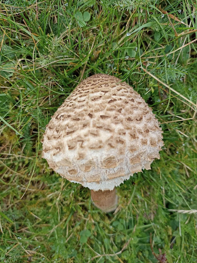

Rubrique sorties et voyages
Les Pyrénées sont une partie de la France magnifique, avec une biodiversité d’une diversité hors du commun. Et pour observer cette diversité, il ne faut pas chercher très loin, elle est omniprésente.

Le voyage d’intégration au pic du midi des E2 a été l’occasion pour notre classe de visiter de nombreux lieux et de faire des sorties pédagogiques intéressantes. Parmi elles, une petite randonnée éducative sur la faune et la flore du Pic du Midi. Nous y avons découvert de nombreuses choses sur les êtres vivants peuplant les Pyrénées. Cette excursion a eu lieu le matin du 24 septembre, soit le troisième et dernier jour de leur séjour.
Le Parc national abrite une faune riche et spécifique particulièrement intéressante. Des rapaces ou des mammifères, très présents, ou totalement absents dans la culture populaire, petits ou grands tous ont leur place dans cet environnement . Ces animaux peuplant les montagnes des Pyrénées sont tous importants pour former la biocénose du Pic du midi. On dénombre des espèces très connues comme les Aigles royaux, les marmottes ou encore l’ours.

Cependant, d’autres animaux passent dans l’ombre de ces stars des Pyrénées comme de nombreux rapaces tels que le Gypaète barbu, le Vautour fauve, le Percnoptère d’Egypte ou encore de simples oiseaux tels que le Grand tétras. Mais il existe un habitant de ces montagnes discret et presque inconnu du grand public. En effet le Desman est un petit mammifère insectivore semi-aquatique de la famille des taupes, il est surnommé “rat trompette” à cause de son long museau qui a la forme de l’instrument. Il est très rare de l'apercevoir et on ne le trouve que dans les Pyrénées. Le Desman des Pyrénées constitue l’exemple type de ce précieux patrimoine présent de ce Parc national.
Photo d'un desman sortant de l'eau
Le Pic du Midi compte aussi de nombreuses espèces végétales ou de champignons qui développent la flore de cet environnement. La météo humide et capricieuse du mois de septembre est propice à la poussée des champignons dans les Pyrénées-Orientales. Et le moins que l’on puisse dire, c’est que les forêts du département regorgent alors bel et bien de champignons. Cèpes, girolles, vesse-de-loup, trompettes de la mort et mêmes des lactaires (ou roubeillous)… De très nombreuses espèces de champignons sont présentes et ont une grande place dans la flore du Pic du Midi.
Photo d'un bolet à pied rouge, que l'on peut observer en automne dans la région
Il y a aussi de nombreuses espèces de grands arbres comme des chênes ou bien des sapins. On y retrouve aussi beaucoup de fleurs tels que le lis des Pyrénées, L’iris des Pyrénées ou encore la gentiane. Mais il y a aussi là bas les biens connues edelweiss : fleurs emblématique de montagne qui survit à l'hiver grâce à ses pétales qui la protègent des gelées. Les autres fleurs survivent grâce à la neige qui leur permet de rester au chaud, en dessous il y a de l’air qui garde la chaleur (comme dans un igloo).
Cet article a été rédigé par Maël Laouenan, Raphaël Brigliadori et Louis Rhin